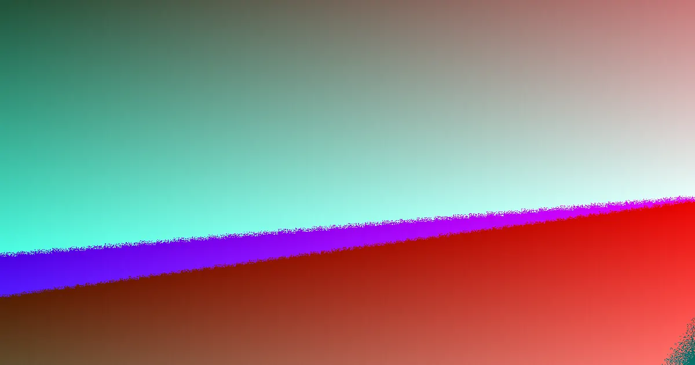

For Brisbane businesses, understanding web design costs starts with defining the project scope. Expect to invest approximately $2,500 to $7,500 for a basic brochure site, $7,500 to $15,000 for a lead-focused website, and more for e-commerce or custom builds. Timelines typically range from 4-10 weeks for simpler sites to 12+ weeks for complex projects, heavily influenced by content and feedback.
For local buyers, web design brisbane cost guide the practical decision hinges on the scope of your website needs, platform control, and search engine preparation.
Web Design Brisbane Cost Guide Explained
Web design services in Brisbane encompass a variety of options, including custom design, small business websites, WordPress builds, Shopify or WooCommerce stores, website redesigns, landing pages, SEO-friendly builds, and ongoing care plans. The choice of service should align with the specific commercial objectives of the business. A brochure website is suitable for establishing a clear service presence and an enquiry pathway. A lead-focused site requires a more robust page structure, persuasive copy, and clear calls to action. An online store necessitates features for product management, checkout processes, and building customer trust. Redesigns should carefully consider the preservation of existing search engine rankings and valuable content while modernising the site.
For new businesses, identifying essential pages for credibility and lead capture is key. Growing service businesses should focus on how landing pages, service pages, and local pages can effectively support customer demand. Existing website owners undertaking a redesign need to ascertain what elements, including content and ranking signals, will be retained. Online sellers must evaluate whether Shopify or WooCommerce offers the optimal platform for their product management, update frequency, and fulfilment processes.
Factors Influencing Price Before Design
The broad pricing guidance for web design reflects the variability in project requirements. A small business brochure website typically costs between $2,500 and $7,500, while a more sophisticated lead-focused website can range from $7,500 to $15,000. E-commerce solutions and heavily customised projects generally incur higher initial costs. Therefore, the initial consultation should focus on defining the project's scope.
A business that provides prepared content, a clearly defined list of services, and a straightforward enquiry goal will find the estimation process more manageable compared to one still determining its offerings, target audience, and page structure. The critical question for clients is not solely about the aesthetic outcome but also about the comprehensive services included in the project. This includes discovery phases, content support, mobile responsiveness, technical setup, pre-launch checks, and post-launch assistance.
When comparing local website packages, clients should request a clear breakdown of inclusions. This might include the number of page templates, the type of content management system, form functionalities, basic search engine optimisation setup, analytics integration, user training, maintenance services, backup procedures, and the revision process. Understanding these inclusions is vital to distinguish between a genuinely lean quote and one that may omit essential work, potentially leading to additional costs later.
Timing: Content and Feedback Dependencies
The timeline for website development is significantly influenced by the availability and quality of content, as well as the speed of client feedback. A simple brochure site commonly takes between 4 to 10 weeks to complete. WordPress or standard small business sites typically require 6 to 10 weeks. More complex projects, such as e-commerce sites or custom builds, can extend from 12 weeks to several months.
The pace at which content is provided and feedback is given is often the most critical factor affecting the project schedule. While designers can plan discovery, wireframing, design, development, testing, and launch phases, delays in receiving copy, missing images, or slow review cycles can significantly extend the project duration. Businesses in Brisbane planning a website launch for a specific campaign, relocation, new service introduction, or to support advertising efforts should work backward from the desired launch date. Prioritising and approving essential launch content early is crucial.
Key steps include confirming the core pages before design commences, gathering all brand assets, photographs, service details, and offers in a centralised location. Designating a single point of contact for approving copy, design elements, and launch-related items streamlines the process. Differentiating between content that is mandatory for launch and enhancements that can be implemented post-launch helps manage expectations and timelines effectively.
Search-Ready vs. Ranking Guarantees
A well-built website should be fast, mobile-first, structurally sound, and founded on SEO principles. This forms a necessary baseline for any business website, ensuring clean page structure, mobile usability, appropriate on-page content, and rapid loading speeds, which are prerequisites for effective ongoing marketing efforts. However, being 'search-ready' is distinct from guaranteeing specific search engine rankings.
The source material clarifies that ongoing search engine performance is contingent upon factors such as market competition and the quality and relevance of content. Consequently, no provider can ethically guarantee a specific search engine position under Australian Consumer Law. Buyers should therefore differentiate between the quality of the website build and any outcome-based promises made by a provider.
It is advisable to inquire about the specific actions to be taken at launch, the content required post-launch to maintain momentum, and the methodology for reviewing website performance. Additionally, understanding whether service pages are being developed around genuine customer queries can significantly enhance a site's relevance and potential for organic visibility.
- Define Your Website's Purpose. Clarify whether you need a brochure site, lead generation site, e-commerce store, or redesign. This dictates features and complexity.
- Assess Content Readiness. Gather all necessary text, images, and brand assets. The more prepared you are, the faster the process.
- Request Detailed Inclusions. Ask for a clear breakdown of what's included in the quote, such as page templates, SEO setup, and post-launch support.
- Establish Feedback Loops. Nominate a key contact person and set clear expectations for timely feedback to avoid project delays.
- Separate Build Quality from Ranking Promises. Focus on a well-built, search-ready site. Understand that ranking guarantees are not feasible.
| Website Type | Estimated Cost Range (AUD) | Estimated Timeline (Weeks) |
|---|---|---|
| Small Brochure Site | $2,500 - $7,500 | 4 - 10 |
| Lead-Focused Site | $7,500 - $15,000 | 6 - 10 |
| E-commerce / Custom Build | Starts Higher | 12+ |
Common questions
What is the typical cost for a basic website in Brisbane? For a basic brochure site in Brisbane, you can typically expect costs to range from approximately $2,500 to $7,500. This price point generally covers essential pages for establishing an online presence and providing contact information.
How long does it take to build a website in Brisbane? The timeline for building a website in Brisbane varies significantly with complexity. A simple brochure site might take 4 to 10 weeks, while a more complex lead-focused or e-commerce site can take 12 weeks or several months, heavily dependent on content delivery and feedback.
Can a web designer guarantee my website will rank first on Google? No reputable web designer or agency can guarantee specific search engine rankings. While they can build a search-optimised website, actual ranking performance depends on many external factors like competition and ongoing content strategy, and guarantees are not permissible under Australian Consumer Law.
Brisbane and South East Queensland businesses seeking commercial website development.